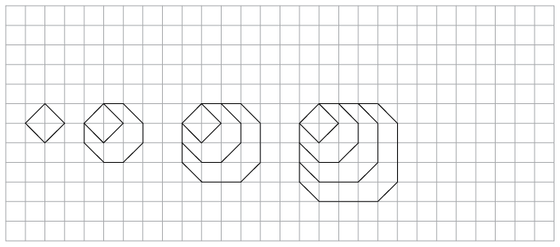

Hoofstuk 9
Vergelykings
In hierdie hoofstuk sal jy na getalle soek wat bewerings waar maak. Dit word die oplossing van vergelykings genoem. Jy sal vergelykings op twee verskillende maniere oplos, naamlik deur inspeksie en deur hulle ‘om te keer’.
Jy sal vind dat twee vergelykings dieselfde oplossing kan hê. Sulke vergelykings word ekwivalente vergelykings genoem. Jy sal ook ontdek dat nie alle bewerings algebraïese vergelykings is nie. Sommige bewerings is algebraïese identiteite en ander is in werklikheid algebraïese onmoontlikhede. Jy sal leer wat die verskil tussen hierdie drie tipes bewerings is.
9.1 Los vergelykings op deur inspeksie
-
Ses vergelykings is onder die tabel gegee. Gebruik die tabel om uit te vind vir watter van die gegewe waardes van x dit waar sal wees dat die linkerkant van die vergelyking gelyk is aan die regterkant.
Om die oplossing van ’n vergelyking te soek deur tabelle te gebruik, word oplossing deur inspeksie genoem.
\(x\)
-3
-2
-1
0
1
2
3
4
2\(x\) + 3
-3
-1
1
3
5
7
9
11
\(x\) + 4
1
2
3
4
5
6
7
8
9 - \(x\)
12
11
10
9
8
7
6
5
3\(x\) - 2
-11
-8
-5
-2
1
4
7
10
10\(x\) - 7
-37
-27
-17
-7
3
13
23
33
5\(x\) + 3
-12
-7
-2
3
8
13
18
23
10 - 3\(x\)
19
16
13
10
7
4
1
-2
-
2\(x + 3 = 5x\) + 3
-
5\(x + 3 = 9 - x\)
-
2\(x + 3 = x\) + 4
-
10\(x - 7 = 5 x\) + 3
-
3\(x - 2 = x\) + 4
-
9 - \(x = 2 x\) + 3
-
Twee vergelykings kan dieselfde oplossing hê. \(5x = 10\) en \(x + 2 = 4\) het byvoorbeeld dieselfde oplossing; \(x = 2\) is die oplossing vir albei vergelykings.
Twee vergelykings word ekwivalent genoem as hulle dieselfde oplossing het.
-
Watter van die vergelykings in vraag 1 het dieselfde oplossing? Verduidelik.
9.2 Los vergelykings op deur optellings- en vermenigvuldigingsinverses te gebruik
-
Bepaal die waarde van \(x\):
-
Voltooi die vloeidiagramme. Jy moet al die ontbrekende getalle invul.
-

Om die tweede invoergetal te kry, kan jy vir jouself sê: “Nadat ek 7 bygetel het, het ek 12 gehad. Wat het ek gehad voordat ek 7 bygetel het?”
-

Om die invoergetal te kry wat met 13 ooreenstem, kan jy jouself afvra: “Wat het ek gehad voordat ek 3 bygetel het?” En dan: “Wat het ek gehad voordat ek met 2 vermenigvuldig het?”
-
-
Gebruik jou antwoorde vir vraag 2 om jou antwoorde vir vraag 1 te kontroleer.
-
Beskryf die instruksies in vloeidiagram 2(b) in woorde en ook met ’n uitdrukking in simbole.
-
Voltooi die vloeidiagram.
Hierdie vloeidiagram word die inverse van die vloeidiagram in vraag 2(b) genoem.

-
Vergelyk die invoergetalle en die uitvoergetalle van die vloeidiagramme in vraag 2(b) en vraag 5. Wat merk jy op?
-
Tel 5 by enige getal en trek dan 5 van jou antwoord af. Wat kry jy?
-
Vermenigvuldig enige getal met 10 en deel dan die antwoord deur 10. Wat kry jy?
As jy ’n getal bytel en dan dieselfde getal aftrek, is jy terug waar jy begin het. Dit is waarom optel en aftrek inverse bewerkings genoem word.
As jy met ’n getal vermenigvuldig en dan deur dieselfde getal deel, is jy terug waar jy begin het. Dit is waarom vermenigvuldiging en deling inverse bewerkings genoem word.
Die uitdrukking \(5x − 3\) sê “vermenigvuldig met 5 en trek dan 3 af ”. Hierdie instruksie kan ook met ’n vloeidiagram gegee word:
Die vergelyking \(5x − 3 = 47\) kan ook as ’n vloeidiagram geskryf word:

-
-
Los die vergelykings hier onder op. Jy kan dit doen deur die inverse bewerkings te gebruik. Jy kan ’n vloeidiagram maak om jou te help om die bewerkings te sien.
-
\(2x + 5 = 23\)
-
\(3x - 5 = 16\)
-
\(5x - 60 = -5\)
-
\(\frac{\text{1}}{3}x + 11 = 19\)
-
10(\(x + 3) = 88\)
-
2(\(x - 13) = 14\)
-


9.3 Stel vergelykings op
STEL VERGELYKINGS OP
Jy kan maklik ’n vergelyking opstel wat 5 as die oplossing het. Hier is ’n voorbeeld:
|
Begin deur die oplossing te skryf |
\(x = 5\) |
|
Tel 3 aan albei kante by |
\(x +3 = 8\) |
|
Vermenigvuldig albei kante met 5 |
\(5x + 15 = 40\) |
-
Wat is die oplossing van die vergelyking \(5x + 15 = 40\)?
-
Stel jou eie vergelyking op met die oplossing \(x = 3\).
-
Bongile het soos volg gewerk om die vergelyking \(2(x + 8) = 30\) te maak, maar hy het ’n deel van sy werk uitgevee.
Begin deur die oplossing te skryf
\(x = \) Tel 8 aan albei kante by
\( = 15\) Vermenigvuldig albei kante met 2
\(2(x + 8) = 30 \) Voltooi Bongile se skryfwerk om die vergelyking \(2(x + 8) = 30\) op te los.
-
Dit is hoe Bongile ’n moeiliker vergelyking gemaak het:
Begin deur die oplossing te skryf
\(x = \) Vermenigvuldig met 3 aan albei kante
\(3x = \) Trek 9 aan albei kante af
\(3x − 9 = 6\) Tel 2x aan albei kante by
\(5x − 9 = 2x + 6\) -
Wat was aan die regterkant voor Bongile 9 afgetrek het?
-
Wat is die oplossing van \(5x - 9 = 2x + 6\)?
-
-
Bongile het met ’n oplossing begin en met ’n vergelyking geëindig. Vul die stappe in wat Bongile gevolg het om die vergelyking op te stel en die vergelyking op te los:
solving equations
|
Om ’n vergelyking op te stel, kan jy dieselfde bewerking aan albei kante toepas. |
Om ’n vergelyking op te los, kan jy die inverse bewerking aan albei kante toepas. |
|||
|
|
\[x = 4\] |
|
||
|
Vermenigvuldig met 8 |
\[8x = 32\] |
Deel deur 8 |
||
|
Tel 3 by |
\[8x + 3 = 35\] |
Trek 3 af |
||
|
Trek \(5x\) af |
\[3x + 3 = 35-5x\] |
Tel \(5x\) by |


Gebruik enige toepaslike metode om die vergelykings hier onder op te los.
-
\(5x + 3 = 24 − 2x \)
\(2x + 4 = -9\)
-
3 - \(x\) = \(x\) - 3
-
6(2\(x\) + 1) = 0
-
-
-
4(1 - 2\(x\)) = 12 - 7\(x\)
-
8(1 - 3\(x\)) = 5(4\(x\) + 6)
-
7\(x\) - 10 = 3\(x\) + 7
-
1,6\(x\) + 7 = 3,5\(x\) + 3,2
-
GETALPATRONE EN VERGELYKINGS
-
-
Watter van die volgende reëls sal die getalpatroon oplewer wat in die tweede ry van die tabel hier onder gegee word?
A. Termwaarde \(= 8n\) waar \(n\) die termnommer is
B. Termwaarde \(= 6n −1\) waar \(n\) die termnommer is
C. Termwaarde \(= 6n + 2\) waar \(n\) die termnommer is
D. Termwaarde \(= 10n − 2\) waar \(n\) die termnommer is
E. Termwaarde \(= 5n + 3\) waar \(n\) die termnommer is
Termnommer
1
2
3
4
5
6
7
8
9
Termwaarde
8
13
18
23
28
33
38
43
48
-
Die sesde term van die ry het die waarde 33. Watter term sal die waarde 143 hê? Jy kan ’n vergelyking opstel en oplos om uit te vind.
-
Pas reël E op jou antwoord toe om te kontroleer of jou antwoord korrek is.
-
-
-
Skryf die reël neer wat die getalpatroon in die tweede ry van hierdie tabel sal oplewer. Jy sal dalk ’n bietjie moet eksperimenteer om uit te vind wat die reël is.
Termnommer
1
2
3
4
5
6
7
8
9
Termwaarde
5
8
11
14
17
20
23
26
29
-
atter term sal die waarde 221 hê?
-
-
Die reël vir getalpatroon A is \(4n + 11\) en die reël vir patroon B is \(7n − 34\).
-
Voltooi die tabel vir die twee patrone.
Termnommer
1
2
3
4
5
6
7
8
9
Patroon A
Patroon B
-
Vir watter waarde van n is die terme van die twee patrone gelyk?
-
9.4 Vergelykings en situasies
- Beskou hierdie situasie.
-
Hoeveel geld het jy nodig om die kamer vir 10 dae te huur?
-
Hoeveel geld het jy nodig om die kamer vir 15 dae te huur?
-
Watter van die volgende beskryf die metode wat jy gebruik het om vraag 1(a) en (b) te beantwoord die beste? Onderstreep dit.
A. Totale koste = \(\text{R}400 + \text{R}80\)
B. Totale koste = \(400\text{(getal dae} + 80)\)
C. Totale koste = \(80 \times \text{ getal dae } + 400\)
D. Totale koste = \((80 + 400) \times \text{ getal dae}\)
-
Vir hoeveel dae kan jy die kamer wat in vraag 1 beskryf is huur, as jy R2 800 het?
As jy wil weet vir hoeveel dae jy die kamer kan huur as jy R720 het, kan jy ’n vergelyking opstel en dit oplos:
Jy weet die totale koste is R720 en jy weet dat jy die totale koste soos volg kan uitwerk:
\(\text{Totale koste }= 80x + 400\), waar x die getal dae is. Dus \(80x + 400 = 720\) en \(x = 4\) dae.
Bepaal in elkeen van die volgende gevalle die onbekende getal deur ’n vergelyking op te stel en dit op te los.
-
Om ’n sekere kamer te huur, moet jy ’n deposito van R300 betaal en dan R120 per dag.
-
Vir hoeveel dae kan jy die kamer huur as jy ’n totaal van R1 740 kan betaal? (As jy sukkel om die vergelyking op te stel, mag dit jou help om eers te besluit hoe jy sal uitwerk wat dit sal kos om die kamer vir 6 dae te huur.)
-
Wat sal dit kos om die kamer vir 10 dae, vir 11 dae en vir 12 dae te huur?
-
Vir hoeveel dae kan jy die kamer huur as jy R3 300 beskikbaar het?
-
Vir hoeveel dae kan jy die kamer huur as jy R3 000 beskikbaar het?
-
-
Ben en Thabo besluit om ’n paar berekeninge met ’n bepaalde getal te doen. Ben vermenigvuldig die getal met 5 en tel 12 by. Thabo kry dieselfde antwoord as Ben wanneer hy die getal met 9 vermenigvuldig en 16 aftrek. Wat is die getal waarmee hulle gewerk het?
-
Die koste om ’n bepaalde motor vir ’n tydperk van x dae te huur, kan met die volgende formule bereken word: Huurkoste in rand \(= 260x + 310\)
Watter inligting oor die huur van die motor sal jy kry as jy die volgende vergelyking oplos? \(260x + 310 = 2 910\)
-
Sarah het ’n deposito van R320 vir ’n stalletjie by ’n mark betaal en sy betaal ook R70 per dag huur vir die stalletjie. Sy verkoop vrugte en groente by die stalletjie en stel vas dat sy elke dag ongeveer R150 wins kan maak. Na hoeveel dae sal sy soveel verdien het as wat sy in totaal vir die stalletjie betaal het?
Om ’n kamer in ’n sekere gebou te huur, moet jy ’n deposito van R400 betaal en dan R80 per dag.
9.5 Los vergelykings op deur die eienskappe van eksponente te gebruik
Jy moet dalk terugblaai na Hoofstuk 5 om jou geheue oor die eienskappe van eksponente te verfris.
Een tipe eksponensiële vergelyking waarmee jy in Graad 9 te doen het, het een of meer terme met ’n grondtal wat verhef word tot ’n mag wat ’n veranderlike bevat.
Voorbeeld: \(2^{x} = 16\)
Wanneer ons die onbekende waarde moet bepaal, vra ons die vraag: “Tot watter mag moet die grondtal verhef word sodat die bewering waar is?”
Example: \(2^{x}\) = 16 Maak seker dat die terme met \(x\) op hul eie aan een kant is.
\(2^{x}\) = \(2^{4}\) Skryf die bekende term met dieselfde grondtal as die term met die eksponent.
\(x\) = 4 Stel die eksponente gelyk.
In die voorbeeld hier bo kan ons die eksponente gelykstel omdat die twee getalle gelyk is slegs wanneer hulle tot dieselfde mag verhef word.
-
Los op vir \(x\):
-
\(5^{x-1}\) = 125
-
\(2^{x+3}\) = 8
-
\(10^{x}\) = 10 000
-
\(4^{x+2}\) = 64
-
\(7^{x+1}\) = 1
-
\(x^{0}\) = 1
Voorbeeld: Los op vir \(x\): \(3^{x}\) = \(\frac{\text{1}}{\text{27}}\)
\(3^{x}\) = \(3^{-3}\) (Herskryf \(\frac{\text{1}}{\text{27}}\) as ’n getal met grondtal 3)
\(x\) = -3 (Stel die eksponente gelyk.)
-
-
Los op vir \(x\).
-
\(7^{x}\) = \(\frac{\text{1}}{\text{49}}\)
-
\(10^{x}\) = 0,001
-
\(6^{x}\) = \(\frac{\text{1}}{\text{216}}\)
-
\(10^{x-1}\) = 0,001
-
\(4^{-x}\) = \(\frac{\text{1}}{\text{16}}\)
-
\(7^{x}\) = \(7^{-3}\)
-
In ’n ander tipe vergelyking wat eksponente behels, is die veranderlike deel van die grondtal.
Voorbeeld: \(x^5 = 32\)
Wanneer ons die onbekende waarde moet bepaal, vra ons die vraag: “Watter getal moet tot die gegewe mag verhef word sodat die bewering waar is?”
Vir hierdie vergelykings moet jy onthou wat jy oor die magte van getalle soos 2, 3, 4, 5 en 10 weet.
LOS VERGELYKINGS OP MET ‘N VERANDERLIKE IN DIE GRONDTAL
-
Voltooi die tabel en beantwoord die vrae wat volg:
\(x\)
2
3
4
5
(a)
\(x^{3}\)
\(2^{3}\) = 8
(b)
\(x^{5}\)
\(2^{5}\) = 32
(c)
\(x^{4}\)
\(2^{4}\) = 16
Vir watter waarde van \(x\) is die volgende vergelykings waar?
-
\(x^{3}\) = 64
-
\(x^{5}\) = 32
-
\(x^{4}\) = 256
-
\(x^{3}\) = 8
-
\(x^{4}\) = 16
-
\(x^{5}\) = 3 125
-
-
Los op vir \(x\) en gee ’n rede:
-
\(x^{3}\) = 216
-
\(x^{2}\) = 324
-
\(x^{4}\) = 10 000
-
\(8^{x}\) = 512
-
\(18^{x}\) = 324
-
\(6^{x}\) = 216
-
-
Ahmed het ’n getal met 5 vermenigvuldig, 3 by die antwoord getel en toe die getal waarmee hy begin het afgetrek. Die antwoord was 11. Met watter getal het hy begin?
-
Gebruik enige gepaste metode om die vergelykings op te los.
\(3(x - 2) = 4(x + 1)\)
\(5(x + 2) = -3(2 - x)\)
\(1,5x = 0,7x - 24\)
\(5(x + 3) = 5x + 12\)
\( 2,5x = 0,5(x + 10)\)
\((x − 2) = 7(2 − x)\)
\(\frac{1}{2}(2x - 3) = 5\)
\(2x - 3(3 + x) = 5x + 9\)
Hersiening en assessering
Hersiening
Onthou om al die stappe in jou werk te wys.

TELGETALLE
-
Skryf al die getalle wat in die wolk voorkom in die tabel oor en plaas ’n regmerkie in al die getaltipekolomme waaraan die getal behoort. Die eerste getal is reeds as voorbeeld gedoen.
Getal- waarde
Getallestelsel
Reële getalle
Natuurlike getalle
Heelgetalle
Rasionale
Irrasionale getalle
-3
✔
✔
✔
Die Ndlovu-gesin reis na die Kruger Nasionale Park vir ’n vakansie. Hier is ’n opsomming van hulle reis:
Tyd
Kilometerlesing
Beskrywing
06:12
123 564
Vertrek vanaf hul huis
08:32
123 785
Stop vir ontbyt en petrol
09:18
123 785
Vertrek vanaf vulstasie
11:34
124 011
Ruskamerstop
11:51
124 011
Vertrek vanaf vulstasie
13:32
124 175
Bereik Krugerhek
-
Bereken die getal ure wat die reis geduur het. Gee jou antwoord as ’n gemengde getal.
-
Bereken die gemiddelde spoed van die reis, afgerond tot een desimale plek.
’n Motor wat teen ’n gemiddelde spoed van 110 km/h reis, neem \(\frac{\text{1}}{4}\) uur om ’n reis te voltooi. Indien die terugreis binne 2 uur moet geskied, wat is die gemiddelde spoed wat gehandhaaf moet word?
As 4 blikkies vleis R75,80 kos, hoeveel sal 7 sulke blikkies vleis kos?
’n Boer het genoeg hoendervoer om 300 henne 20 dae lank te voer. Hoe lank sal dieselfde hoeveelheid voer hou voor dit opraak as hy nog 100 henne sou bykoop?
Hoe lank sal dit R5 000 neem om te groei tot R5 900 as dit belê word teen 7,2% enkelvoudige rente per jaar?
Chardonnay wil ’n nuwe TV-stel wat R7 499 kos, koop. Sy het nie genoeg geld nie en oorweeg om dit op huurkoop te kry. Die winkel vra ’n deposito van 10% en dan gelyke maandelikse betalings van R\(x\) vir 2 jaar. Indien die enkelvoudige rente wat op die rekening gehef word 15% is, bereken die waarde van \(x\).
Hoeveel rente sal Tebogo kry as hy R12 500 deponeer vir 21 maande in ’n bankrekening wat 5,3% saamgestelde rente per jaar lewer?
HEELGETALLE
Al die vrae in hierdie afdeling moet sonder ’n sakrekenaar gedoen word.
-
Skryf ’n getal in elke blokkie om die vergelykings waar te maak:
-
\(☐ + ☐ = -34\)
-
\(☐ + ☐ = -34\)
-
- Hierdie vrae gaan oor getallerye. Vul die korrekte waardes in die blokkies in.
-
18; 10; 2;☐
-
2; -10; 50;☐
-
-6 386; -6 392; -6 398; ☐
-
-
Hier onder is ’n getallelyn. Die ontbrekende getal is presies halfpad tussen die ander twee getalle. Vul die korrekte waarde in die blokkie in.

-
Bereken die volgende:
-
28 - (-15)
-
(-5)(12)(-7)
-
5 + 5 \(\times -6\)
-
\(\frac{(\sqrt{81})(-2)^{3}}{-(-3)^{2}}\)
-
\(\frac{(-3)^{2} \sqrt[3]{216}}{(-9)(-3)}\)
-
-
Keiser Augustus het vanaf 27 v.C. tot 14 n.C. oor die Roomse Ryk geheers. Hoeveel jaar het hy regeer?
BREUKE
Al die vrae in hierdie afdeling moet sonder ’n sakrekenaar gedoen word.
-
Vereenvoudig:
-
\(\sqrt{\frac{36}{81} x^8}\)
- \(\frac{5}{2}\)\(x^{2}\) - \(\frac{5}{4}\)\(x^{2}\)
-
\((\frac{3}{4}xy^{3})( \frac{4}{9}y)\)
-
-
Vereenvoudig:
- \(\frac{4 x^{10}}{8x^5}\)
- \(\frac{\text{5}}{\text{x}}\) - \(\frac{1}{x}\)
- \(\frac{5x}{\text6{y^2}}\) \(\times\) \(\frac{3y}{15x}\)
- \(\frac{x+2}{4z^2}\) \(\div\) \(\frac{4(x+2)}{2z^3}\)
- \(\frac{4 x^{10}}{8x^5}\)
DIE DESIMALE NOTASIE VIR BREUKE
Al die vrae in hierdie afdeling moet sonder ’n sakrekenaar gedoen word.
- Bereken:
- 27,49 - 6,99
- 0,03 \(\times\) 1,4
- 1,44 \(\div\) 0,012
- Vereenvoudig:
- \(\sqrt{0.04 x^{16}}\)
- \(3.5x^{2} - 4,6 x^{2}\)
- \((1,2 x^{2}y^{3})\)\((5y x^{2})\)
- Simplify
the following:
- \(\frac{0.2 x^{15}}{0.01x^5}\)
- \(\frac{0.45}{x} - \frac{1.35}{x}\)
- \(\frac{0,5 x^{3}}{4.5y^2} \times \frac{3y}{2,5x}\)
- \(\frac{2,5 x^{3}}{2y^2} \div \frac{0,5x}{0,03y^6}\)
exponents
All the questions in this section should be answered without using a calculator, unless otherwise specified in the question.
- Write the following numbers in
scientific notation:
- 2 500 001
- 0,000 304 5
- Write the following number in "normal" notation: \(9,45 \times 10^{-5}\).
- Which of the following numbers is bigger: \(4,7 \times 10^{-9}\) or \(5,12 \times 10^{-10}\)?
- Calculate the following,
giving your answer in scientific notation:
- \((5,9 \times 10^{6} ) - (4,7 \times 10^{6})\)
- \((5,9 \times 10^{6} ) + (4,7 \times 10^{5})\)
- \((7,2 \times 10^{-4} ) \times (2 \times\) \(10^{2})\)
- \((6,3 \times 10^{-4} ) - (1,9 \times 10^{-3})\)
- \((5,8 \times 10^{-7} ) \div (8 \times 10^{-11})\)
- \(3^{-2}\)
- \(2^{7} \times 6^{-3} \times 3^{2}\)
- \(\frac{2y^{-3}}{y^3}\)
- \((2x^{6}) ^{-3}\)
- \((2x^{7}) (2,5x^{-8})\)
- \((-3a^{2}bc)^2 ( -5ac^{-2})\)
- \(\frac{(2d^2e)^2}{(4d^{-3}e^2)^{-1}}\)
- \(3 \times 3^{x} = 81\)
- \(2^{x+1} = 0,125\)
- \(4^{x} +10 = 74\)
patterns
- Create a sequence that fits this description: the first term is negative, and each successive term is obtained by squaring the previous term and then subtracting 10.
- For each of the
following sequences, (i) write in words the rule that describes
the relationship between the terms in the sequence, and (ii)
use the rule to extend the sequence by three more terms:
- -5; -2; 10; -20;...
- -4,5; -6,25; -8;...
Write down the first four terms of your created sequence.
- \(3 - 5n\)
- \(2n ^{2} - 3n + 1\)
- Write down the rule by which each term of the sequence can be found (in a similar format to those given in question 3, where n is the position of the term): -15; -12; -9; ...
- Use this rule to find the value of the 150th term of the sequence.
|
Position in sequence |
1 |
2 |
3 |
4 |
5 |
10 |
|||
|
Value of the term |
2 |
5 |
10 |
17 |
226 |

- Draw your own series of matchstick patterns in which there is a common difference between each pattern. It must be different to all the matchstick patterns shown in Chapter 6 and this chapter, and should contain the first three matchstick patterns in the series.
- Write in words the rule that describes the number of matchsticks needed for each new pattern.
- Use the rule to determine the missing values in the table below, and fill them in:
|
Number of the pattern |
4 |
5 |
6 |
7 |
50 |
|
|
Number of matches needed |
functions and relationships
-
- Use the given formula to calculate the values of t, given the values of p:
- Use the given formula to calculate the missing input values, p, and output values, t.


|
\(x\) |
-2 |
-1 |
0 |
1 |
4 |
12 |
||||
|
\(y\) |
-4 |
-1 |
2 |
5 |
65 |
- Write, as an algebraic formula, the rule for finding the y-values in the table. The formula is in the form \(y = ax + b\), where \(a\) and \(b\) are integers.
- Use the rule to determine the missing values in the table, and fill them in.

- Complete the following table by reading off the coordinates of points on the graph:
- Write down an algebraic formula for the graph, in the form \(y = \)...
- Complete the flow diagram below to represent the relationship shown on the graph:
|
\(x\) |
-3 |
-2 |
-1 |
0 |
1 |
2 |
|
\(y\) |

algebraic expressions
- Simplify
as far as possible:
- \( (2x^{2} - 4x^{2}) ^{3}\)
- -\( 2x^{2} (5x^{3} - 3x^{2} + 2x - 5)\)
- \( (4b^{2} - 7b^{2})\) \( (5b^{-2} + 3b^{-1} - 7)\)
- \(\frac{18x^2 - 12x + 2}{6x}\)
- \((2x+5)(3x-1)\)
- \((4a - 3)^{2}\)
- \(\frac{6x^3 -2(3x)(4x) + x}{4x^2}\)
- \(4(a-2b) - 5(3b + a)\)
- \(5 +2(x^2 +5x +3)\)
- \(3x(2x^2 -3x + 4) - 3(5 - 2x)\)
- \((a + 3b - 2c) - (4a + b - c) - (2b - c +3a)\)
- \(4(3x^2 + x - 4) - (x + 3)^{2}\)
equations
- Solve the following
equations:
- \(4 - 3x = -2\)
- \(4(2x- 1) = -8\)
- \(2x + 1 = 3(2x - 1)\)
- (\(x + 2)(x - 4) = \(x^{2} + 5x - 1\)
- Write this information in an equation using the variable \(z\).
- Solve the equation to find Tshilidzi's age.
- Write this information in an equation in \(x\).
- Solve the equation to determine the value of \(x\).
- What is the length of the base of the triangle?
- \(3^{x} = 9\)
- \(2^{x+1} = 16\)
Assessment
In this section, the numbers in brackets at the end of a question indicate the number of marks the question is worth. Use this information to help you determine how much working is needed. The total number of marks allocated to the assessment is 75.

- Gareth completed the following
number classification:
- Gareth has made some errors. Complete the following table by putting the ticks in the correct boxes: (2)
- Explain why you have made the changes you have. (2)
Number value
Number system
Real numbers
Natural numbers
Integers
Rational numbers
Irrational numbers
-1,5
✔
✔
✔
\(\sqrt{2}\)
✔
✔
Number value
Number system
Real numbers
Natural numbers
Integers
Rational numbers
Irrational numbers
-1,5
\(\sqrt{2}\)
- What is the value of \((-1)^{1000 001}\) ?
(1)
- Explain how you can know the answer in (a) without needing a calculator. (1)
- \(\frac{5}{2}x -\frac{11}{4}x + 1,125x\) (2)
- \(\sqrt[3]{\frac{0,027 x^7}{316x}}\) (4)
- \(\frac{0,4x}{10} \times \frac{20x}{0,03} \div \frac{8x^{2}}{5}\) (4)
- \(\frac{x}{4}+ [8x (x + 1) \times \frac{0,5}{x+1}\)] (5)
- \(3^{-9} \times 3^{4}\)
- \(\frac{(3d^3e^2)^3}{(2d^{-4}e)^-1}\) (5)
- Extend the sequence by two more terms. (2)
- Is this the correct rule for
the sequence (where n is the position of the term
in the sequence): \(6 000(0,25)^{n-1}\)? Explain your answer. (2)

- Draw the 5th diagram in the pattern alongside the picture above. (2)
- The first two terms in the sequence created by the number of matchsticks in each pattern is 4; 11. Write down the next three terms in the sequence. (2)
- Write in words the rule that describes the relationship between the terms in the sequence. (2)
|
\(x\) |
-2 |
-1 |
0 |
1 |
5 |
16 |
||||
|
\(y\) |
-10 |
-3 |
-2 |
-1 |
7 998 |
- Write the rule for finding the y-values in the table as an algebraic formula. (2) (Hint: Look at the cubes of the numbers.)
- Use the rule to determine the missing values in the table, and fill them in. (3)

- Complete the following table by reading off the coordinates of points on the graph: (2)
- Write down an algebraic formula for the graph in the form \(y = ...\) (2)
|
\(x\) |
-2 |
-1 |
0 |
1 |
2 |
3 |
|
\(y\) |
- \(\frac{15+x-5x^2}{5x^2}\) (3)
- \((3x+1)(3x-1)\) (2)
- 4 - \(3(2x+ 3)^{2}\) (3)
- \(x^2 + 5x - 1 - x^2 -x + 3 = 3(x-4)\) (4)
- \(2(2x+3) = (3x-1)(-2)\) (4)